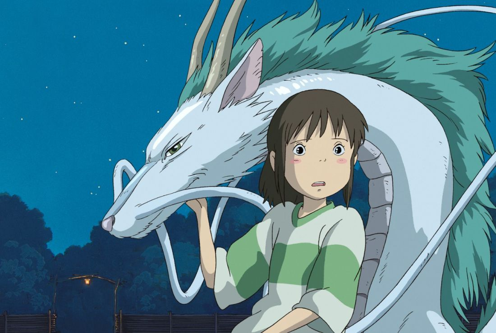

Spirited Away
In this animated feature by noted Japanese director Hayao Miyazaki, 10-year-old Chihiro and her parents stumble upon a seemingly abandoned amusement park. After her mother and father are turned into giant pigs, Chihiro meets the mysterious Haku, who explains that the park is a resort for supernatural beings who need a break from their time spent in the earthly realm, and that she must work there to free herself and her parents.
How To Train Your Dragon
Hiccup is a Norse teenager from the island of Berk, where fighting dragons is a way of life. His progressive views and weird sense of humor make him a misfit, despite the fact that his father is chief of the clan. Tossed into dragon-fighting school, he endeavors to prove himself as a true Viking, but when he befriends an injured dragon he names Toothless, he has the chance to plot a new course for his people's future.
Dragonheart
Disillusioned knight Bowen befriends Draco , the last of the dragons, and the two begin scamming village folk as Bowen repeatedly "kills" Draco for money. Bowen soon learns that Draco is the same dragon who once saved his former student, now King Einon , from death by giving him a piece of his heart. Einon is now a merciless tyrant, and Bowen is compelled to stop him -- but the bond between king and dragon means if one dies, the other does as well.